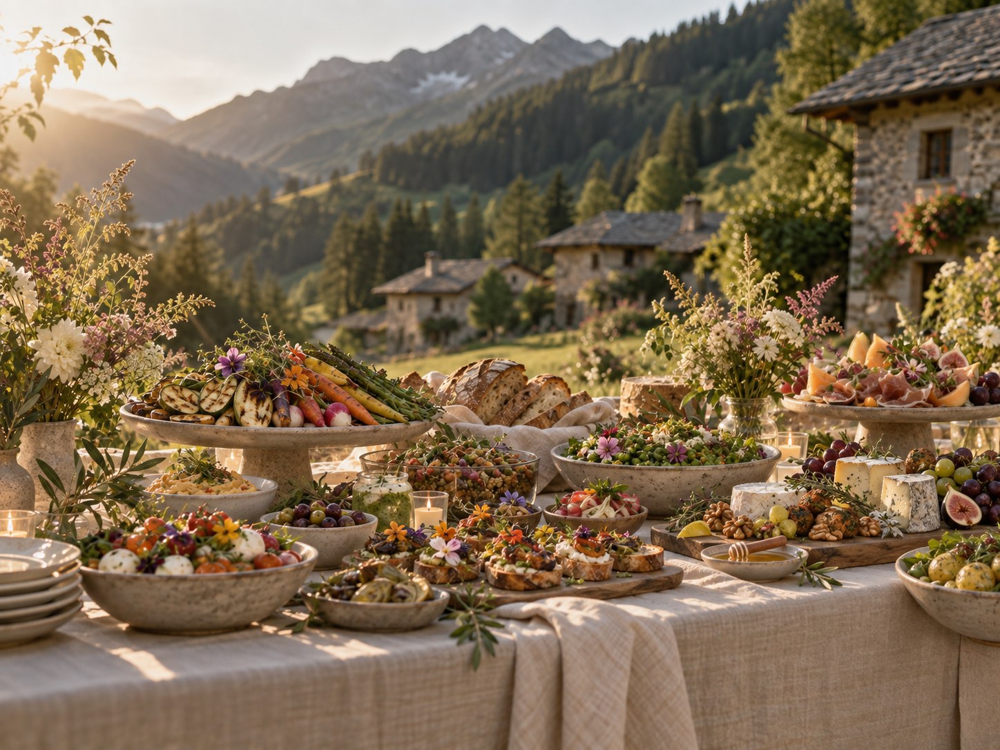
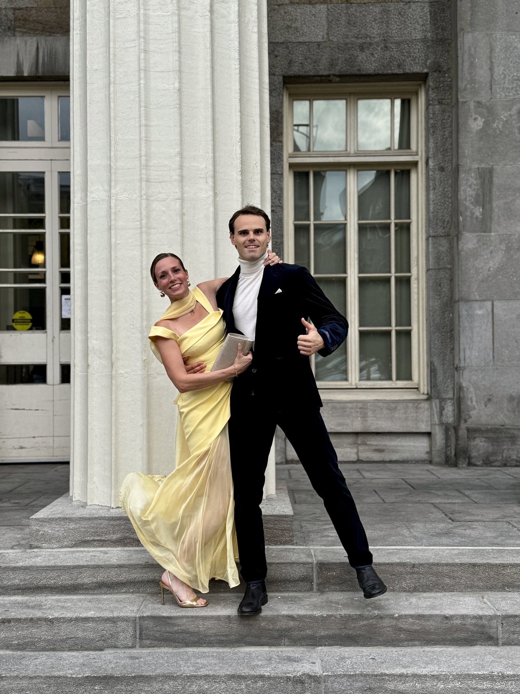
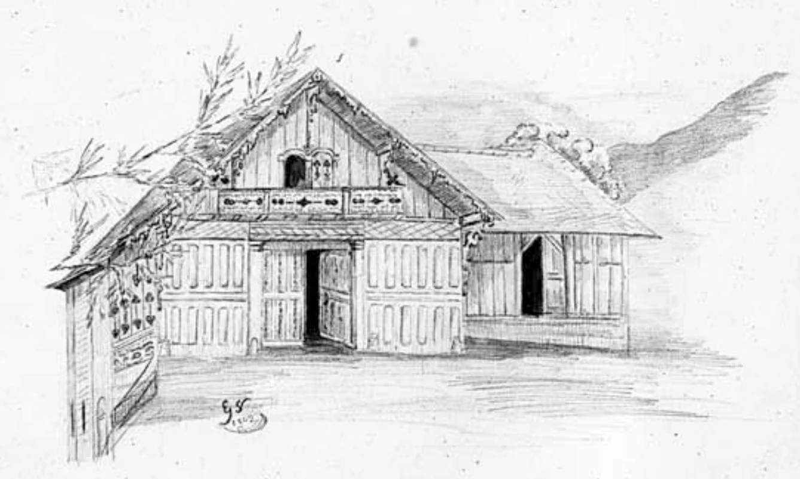
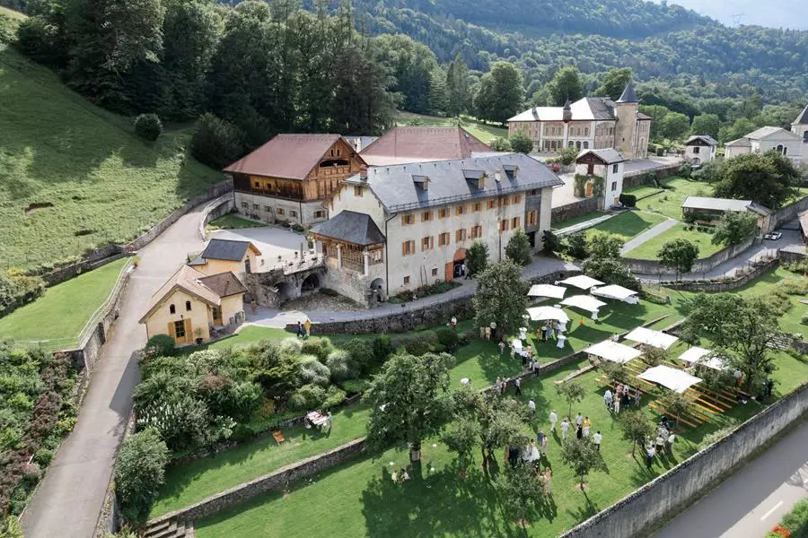
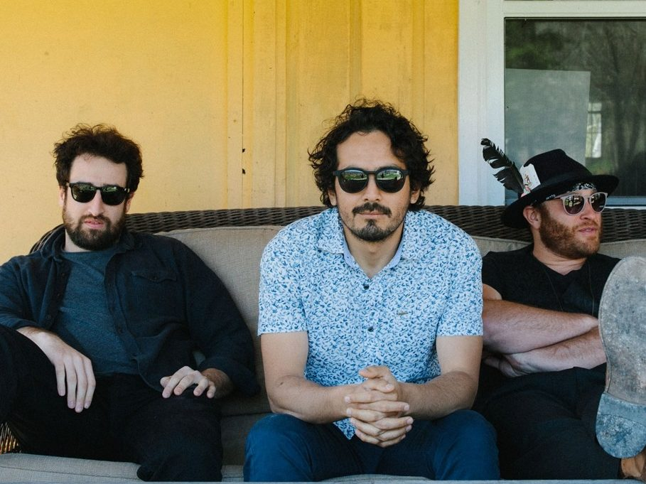
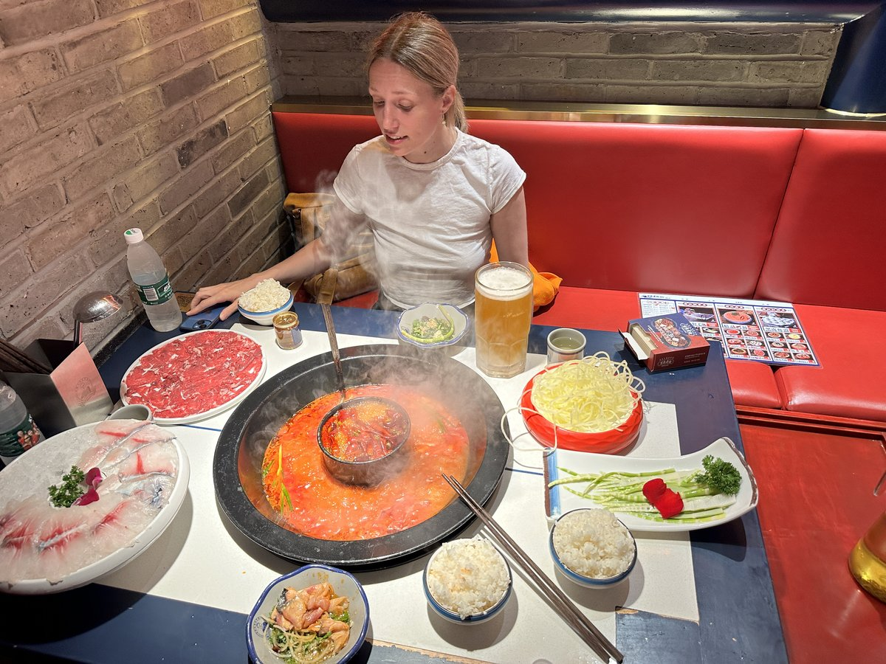
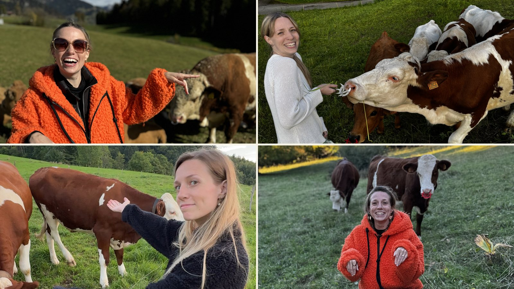
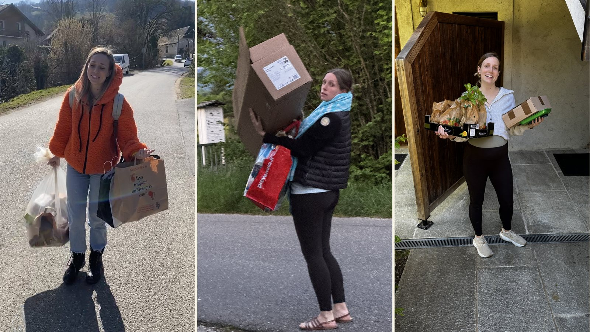
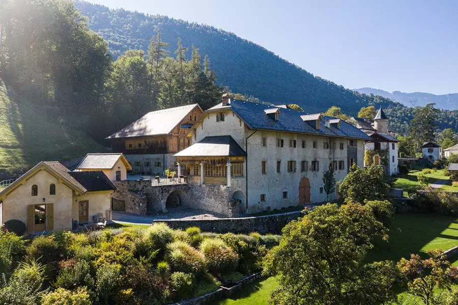

01
The table
Idée’O Traiteur, our local caterer. Everything homemade, organic and in season. Natural wines and drinks flowing all night, all included. Come hungry.
ideeotraiteur.com
The day
La Ferme de Gy, Giez



01
Idée’O Traiteur, our local caterer. Everything homemade, organic and in season. Natural wines and drinks flowing all night, all included. Come hungry.
ideeotraiteur.com02
Brooke’s family and friends are artists. We will have the chance to witness them perform through the evening — music, and more.

03
The Honeyrunners are flying in from Toronto — first as guests, then as the band, playing live through the evening.
Listen on SpotifyHow well do you know us?
Five ordinary moments captured from our life together. Get all five right and win!
Quiz 1 / 5
What will Cesar do next?
Watch closely…
Quiz 2 / 5

Who said that?
“For once, can’t you just do what I say!”
Quiz 3 / 5

What is Brooke’s favorite animal?
Quiz 4 / 5

Who carries the groceries?
Getting here

200 private spaces at the farm. Free, no booking, no shuttle.